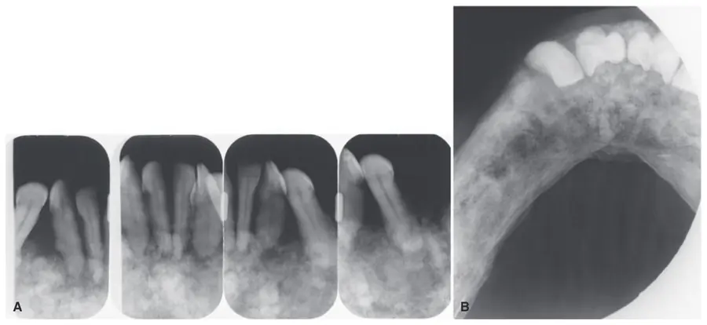

نسخه استخراجشده؛ ترجمه یا تأیید علمی انجام نشده است. وضعیت: captured
بیماری پاژه، یا استئیت دفورمنس، اختلالی اسکلتی و پلیاوستوتیک است که ممکن است عفونت پارامیکسوویروس و تغییرات بعدی ژنوم سلول میزبان در آن نقش داشته باشد. جهش در سه ژن ریمادلینگ استخوان شناسایی شده — SQSTM1، TNFRSF11A و TNFRSF11B — که شایعترینشان SQSTM1 است.

و سازوکارش دو فازی است: «استئوکلاستهای غیرطبیعی موج شدیدی از تحلیل استخوان تولید میکنند. پس از مدتی، این با فعالیت شدید استئوبلاستیک دنبال میشود که استخوان بافهای بیکیفیت میسازد.» و توجه کن: «ممکن است استخوانهای زیادی را همزمان درگیر کند، ولی یک اختلال عمومی اسکلتی نیست.»
اپیدمیولوژی: شایعتر در بریتانیا و استرالیا و کمتر در آمریکای شمالی؛ شیوع حدود ۳٫۵٪ در افراد بالای ۴۰ سال. و شیوع جهانیاش رو به کاهش است.
و پیامدهای بالینیاش در فک: بزرگ شدن فکها ← جابهجایی دندان، دیاستم و مالاکلوژن؛ و دنچرهای متحرک تنگ میشوند یا بد جا میافتند. درد استخوانی نشانهای ناپایدار است و بیشتر در استخوانهای تحملکنندهی وزن؛ درد فک و صورت غیرمعمول است.
و آزمایشگاه، اینجا تشخیص را قفل میکند: این بیماران در فازهای استئوبلاستیک، سطح سرمی آلکالن فسفاتاز شدیداً بالا دارند — «بیش از هر اختلال دیگری». و اغلب هیدروکسیپرولین ادراری بالا دارند، که نشانگر تجزیهی کلاژن است.
روی تصویر: ضخامت استخوانهای کالواریوم میتواند به سه تا چهار برابر برسد. در فک بزرگشده، کورتکس ممکن است نازک شود ولی سالم میماند. اگر ماگزیلا درگیر شود، بیماری همیشه کف سینوس را درگیر میکند — ولی برخلاف دیسپلازی فیبرو، حفرهی هوایی چندان کوچک نمیشود. و در دندان: لامینا دورا کموضوح میشود و هایپرسمانتوز پدید میآید که میتواند پرشور و نامنظم باشد.
و افتراقهای پاژه: از دیسپلازی فیبرو با سن بالاتر و تقریباً همیشه دوطرفه بودن، و با اینکه دیسپلازی فیبرو حفرهی سینوس را کوچک میکند و پاژه نه، از دیسپلازی سمنتو-اوسئوس با اینکه پاژه عمومیتر است و در COD استخوان طبیعی میان کانونها وجود دارد، و از بیماریهای متابولیک با اینکه پاژه استخوان را بزرگ میکند و بیماریهای متابولیک نه.
و دو عارضهی نگرانکننده: «محلهای کشیدن دندان کند ترمیم میشوند، و بروز استئومیلیت بالاتر است.» و مهمتر: «حدود ۱۰٪ موارد بیماری پلیاوستوتیک به استئوسارکوم مبتلا میشوند.» درمان معمولاً دارویی است با کلسیتونین یا بیسفسفونات.
ژیگانتیسم در کودک با اسکلت نابالغ و آکرومگالی در بزرگسال با اسکلت بالغ، هر دو از پرکاری لوب قدامی هیپوفیز — معمولاً از یک تومور ترشحی خوشخیم سلولهای سوماتوتروف.
و در دهان چه میبینی؟ «تاج دندانها بدون تغییر میمانند، ولی ریشهی پرمولرها و مولرها اغلب هایپرسمانتوز پیدا میکنند» — و علتش جالب است: «احتمالاً نتیجهی تغییر تقاضاهای عملکردی و ساختاری بر دندانهاست تا اثر مستقیم افزایش هورمون.» و سوپرارپشن دندانهای خلفی رخ میدهد تا رشد مندیبل را جبران کند.
و مهمترین نکتهی افتراقی این بخش: بزرگ شدن فکها پروگناتیسم کلاس III میسازد و ماکروگلوسی، دندانهای قدامی را فلر میکند و اپنبایت قدامی میسازد. و «نشانهی فلر شدن انسیزورها، نکتهی افتراقی مفیدی میان پروگناتیسم آکرومگالیک و پروگناتیسم ارثی است.»
و در اسکلت: بزرگ شدن سینوسهای پارانازال — بهویژه فرونتال. و یک تفاوت ظریف: «سینوسها در آکرومگالی برجستهترند تا در ژیگانتیسم هیپوفیزی، چون در ژیگانتیسم پنوماتیزاسیون استخوان بیشتر همگام با بزرگ شدن عمومی استخوانهای صورت پیش میرود.» و آکرومگالی ضخیم شدن منتشر کورتکس بیرونی جمجمه هم میسازد.
پس از کشیدن دندان، درمان ریشهی موفق، یا برداشت یک ضایعه، نقص با ترمیم ثانویه پر میشود — و چهار متغیر بر آن اثر دارد: دسترسی به سلولهای استخوانساز مجاور، اندازهی نقص، زمان، و سن و وضعیت استخوانی بیمار.
و دو نکتهی زمانی که در تفسیر پیگیری حیاتیاند: «ترمیم کامل میتواند ماهها تا بیش از یک سال طول بکشد، که دیدن نشانههای زودرس ترمیم را رادیولوژیک دشوار میکند.» و «ترمیم استخوانی از محیط نقص آغاز میشود، چون استئوبلاستها از سطح داخلی نقص به سمت درون رشد میکنند».
و سه یافتهی تصویری ترمیم: حاشیه کموضوحتر میشود چون کورتکس قبلی با رشد استخوان نو به درون از بین میرود، شکل نامنظم میشود، و اگر ضایعهای در ماگزیلا کف سینوس را بالا برده بود، کف ترمیمشده ظاهر «بادکنک خالیشده» میگیرد — به این میگویند ضایعهای که «فروریخته» (collapsed) است، و ساختار داخلی ابتدا الگوی گرانولر در محیط نشان میدهد و سپس ترابکولهای تابنده از مرز به سمت مرکز.
سؤالهای این مرور سختترند و بسیاری از آنها دو بیماری با الگوی داخلی یکسان میدهند و میپرسند کدام ویژگی — بزرگ شدن استخوان، سن، تقارن، یا یک آزمایش خون — تصمیم میگیرد.